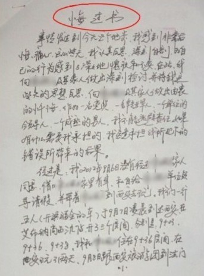
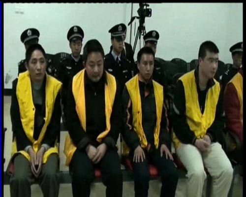

最近2周，海南省万宁市某小学校长带女生开房，在网上闹得沸沸扬扬。
作为一个长期抹黑朝廷的屁民，俺特地收集了最近几年来，发生在天朝各地的未成年人性侵案。这些案子，既有沿海经济发达地区，也有中西部的穷乡僻壤。犯案的禽兽，既包括政府部门的各级官员，也包括教育系统的教师。
俺在博客中不止一次地啰嗦——你不关心政治，政治会来关心你！！！
可能有人会纳闷：儿童性侵案跟政治有啥关系？俺来稍微介绍一下：
天朝是一个奇葩的国度，有一个奇葩的法律叫“嫖宿幼女罪”。
知道这个法律是啥时候出来的吗？是1997年刑法修订，加入的一个单独刑法罪名；然后在2003年最高法院出台的司法解释。
根据2003年的司法解释，如果犯案的淫棍不知对方是“幼女”，则连“嫖宿幼女罪”都算不上了。该司法解释的摘录如下：
在天朝，官员即使出了丑闻，只要风声一过，照样做官 (甚至升官)。有了“嫖宿幼女罪”这个保护伞，那些有色心没色胆的官员，就可以放肆地玩弄心仪的少男少女啦。
关于“嫖宿幼女罪”，还可以看看如下网文。里面附带很多对比图，帮你更深刻地理解这个奇葩的罪名。
《“嫖宿幼女罪”必须废除 @ 网易》
为啥天朝经常会有一些奇葩的法律？因为天朝的最高立法机关是【全国人民戴表大会】。
建议大伙儿读一下俺去年（2012）的博文《看看全国人大代表都是些什么货色——兼谈“议会道路的改良”行不通》看完那篇博文，你就明白“全国人大”里面，都是些什么玩意儿。
俗话说“屁股决定脑袋”，一帮权贵集团的人站在自己的立场上制定法律，他们搞出来的法律难道能维护底层民众的利益吗？不信的话，请看如下明显的对比：
官员财产公开，从胡耀邦时代说到现在，【30年没动静】；
网络实名制立法，2012年刚提出来，就在年底【闪电式通过】。
连朝廷的喉舌自己都承认了，参见《儿童性侵公开报道案例中，45% 施暴者系公职人员 @ 人民网》
也就是说，公职人员是儿童性侵案的【绝对主力】啊！
简而言之，至少包括如下几方面：
1. 性心理学的因素（恋童癖）
2. 传统文化的功劳（处女情结）
3. 卫生方面的考量（职业卖淫女有性病风险）
相信列位看官中，大部分人今后都会有自己的小孩（有些人已经有了）。生活在天朝这种国度，你能保证你的小孩完全不受猥亵和骚扰吗？
不要以为生了儿子就安全了，本文列举的性侵案，也有针对男童的；
不要以为上了私立学校就安全了，本文列举的案例，也有私立学校。
不要以为上了名牌学校就安全了，本文列举的“上海华师大二附中”是全国重点；结果性侵的禽兽就是该校的【特级教师】。
......
如果你寄希望于朝廷会出来主持公正，那你就太天真啦。官员财产公开说了30年了。有动静吗？反腐败说了60年了，腐败不但没收敛，反而更泛滥了。
总而言之，不彻底改变政治体制，儿童性侵案会愈演愈烈。（对推动政治变革感兴趣，可以看俺写的《谈革命》系列博文）
为了避免某些五毛说俺故意造谣，下面给出的链接，有相当一部分来自于朝廷喉舌的网站（比如：新华网、人民网、中新网）；另外一些来自于天朝的大型门户网站（比如：网易、新浪、搜狐、腾讯...）。
显然，能够得到大型网站关注的性侵案，仅仅是冰山一角。再加上俺时间/精力有限，肯定收集不全。如果哪位热心读者想爆料，请翻墙到俺博客留言。爆料最好附上权威网站的链接，有图片更好。
大伙儿群策群力，让更多的禽兽曝光！
（杨校长在宾馆开房的监控录像）
曝光时间：2013.5
曝光时间：2013.5
曝光时间：2013.3

（朱纯良写的悔过书） 禽兽：河南省郑州畜牧局副局长朱纯良
曝光时间：2013.3
曝光时间：2013.3
曝光时间：2013.2
曝光时间：2012.12
(李军年轻时曾参演电视剧《和平年代》)
曝光时间：2012.8
曝光时间：2012.8
曝光时间：2012.6
曝光时间：2012.5
曝光时间：2012.5
曝光时间：2012.5
曝光时间：2012.2
曝光时间：2011.12
曝光时间：2011.12
陕西省略阳县西沟村村支书魏某
陕西省略阳县郭镇干部赵某
陕西省略阳县郭镇干部蒋某
曝光时间：2011.11
曝光时间：2011.11
曝光时间：2011.10
曝光时间：2011.6
曝光时间：2011.5
曝光时间：2010.9
曝光时间：2010.8
曝光时间：2010.5
福建省安溪县人大常委会官员郑某
安溪华侨职业学校校长许新建
曝光时间：2010.4
曝光时间：2010.3
 禽兽：
习水县人大代表、利民房地产开发公司经理母明忠
习水县移民办主任李守明
习水县人事劳动和社会保障局干部黄永亮
习水县马临工业区国土所所长陈孟然
习水县同民镇司法所干部陈村
习水县第一职业高级中学教师冯支洋
曝光时间：2009.7
曝光时间：2009.5
曝光时间：2009.4
曝光时间：2009.4
（这位林书记猥亵幼女之后，还大放厥词说：
曝光时间：2008.10
曝光时间：2007.7
曝光时间：2005.9
曝光时间：2005.8
曝光时间：2005.1
曝光时间：2005.1
曝光时间：2003.2
俺博客上，和本文相关的帖子（需翻墙）：
《如何理解“英美法系”（普通法系）——从“英国古代史”聊到“香港国安法”》
《分析“制度性腐败”——为啥天朝的贪官屡禁不止？》
《每周转载：超级富豪王振华性侵9岁女童（大量网友评论，多图）》
《每周转载：米兔运动（MeToo）冲击佛门，佛协会长竟是淫僧（举报材料及网友评论）》
《每周转载：关于＜编译局言情录＞的电子书、网文、网友评论》
《每周转载：关于雷政富（网文4篇，评论若干，图片若干）》
《每周转载：携程托儿所虐童事件（各方评论及照片、视频）》
作为一个长期抹黑朝廷的屁民，俺特地收集了最近几年来，发生在天朝各地的未成年人性侵案。这些案子，既有沿海经济发达地区，也有中西部的穷乡僻壤。犯案的禽兽，既包括政府部门的各级官员，也包括教育系统的教师。
★编程随想的点评
俺在博客中不止一次地啰嗦——你不关心政治，政治会来关心你！！！
可能有人会纳闷：儿童性侵案跟政治有啥关系？俺来稍微介绍一下：
◇扫盲【嫖宿幼女罪】
天朝是一个奇葩的国度，有一个奇葩的法律叫“嫖宿幼女罪”。
知道这个法律是啥时候出来的吗？是1997年刑法修订，加入的一个单独刑法罪名；然后在2003年最高法院出台的司法解释。
根据2003年的司法解释，如果犯案的淫棍不知对方是“幼女”，则连“嫖宿幼女罪”都算不上了。该司法解释的摘录如下：
行为人明知是不满十四周岁的幼女而与其发生性关系，不论幼女是否自愿，均应依照刑法第二百三十六条第二款的规定，以强奸罪定罪处罚；行为人确实不知对方是不满十四周岁的幼女，双方自愿发生性关系，未造成严重后果，情节显著轻微的，不认为是犯罪。有了这个奇葩的“嫖宿幼女罪”，手握公权力的禽兽，就可以堂而皇之地奸淫幼女。如果没有曝光，当然就没事；即使被曝光，也可以用"嫖宿幼女"的罪名，从轻发落 (“嫖宿幼女罪”的量刑远远小于“强奸罪”)；更有甚者，可以佯装不知对方是“幼女”，连“犯罪”都算不上。
在天朝，官员即使出了丑闻，只要风声一过，照样做官 (甚至升官)。有了“嫖宿幼女罪”这个保护伞，那些有色心没色胆的官员，就可以放肆地玩弄心仪的少男少女啦。
关于“嫖宿幼女罪”，还可以看看如下网文。里面附带很多对比图，帮你更深刻地理解这个奇葩的罪名。
《“嫖宿幼女罪”必须废除 @ 网易》
◇为啥会有这种奇葩的立法？
为啥天朝经常会有一些奇葩的法律？因为天朝的最高立法机关是【全国人民戴表大会】。
建议大伙儿读一下俺去年（2012）的博文《看看全国人大代表都是些什么货色——兼谈“议会道路的改良”行不通》看完那篇博文，你就明白“全国人大”里面，都是些什么玩意儿。
俗话说“屁股决定脑袋”，一帮权贵集团的人站在自己的立场上制定法律，他们搞出来的法律难道能维护底层民众的利益吗？不信的话，请看如下明显的对比：
官员财产公开，从胡耀邦时代说到现在，【30年没动静】；
网络实名制立法，2012年刚提出来，就在年底【闪电式通过】。
◇儿童性侵案的主角都是哪些人？
连朝廷的喉舌自己都承认了，参见《儿童性侵公开报道案例中，45% 施暴者系公职人员 @ 人民网》
也就是说，公职人员是儿童性侵案的【绝对主力】啊！
◇为啥他们喜欢搞儿童？
简而言之，至少包括如下几方面：
1. 性心理学的因素（恋童癖）
2. 传统文化的功劳（处女情结）
3. 卫生方面的考量（职业卖淫女有性病风险）
◇小结
相信列位看官中，大部分人今后都会有自己的小孩（有些人已经有了）。生活在天朝这种国度，你能保证你的小孩完全不受猥亵和骚扰吗？
不要以为生了儿子就安全了，本文列举的性侵案，也有针对男童的；
不要以为上了私立学校就安全了，本文列举的案例，也有私立学校。
不要以为上了名牌学校就安全了，本文列举的“上海华师大二附中”是全国重点；结果性侵的禽兽就是该校的【特级教师】。
......
如果你寄希望于朝廷会出来主持公正，那你就太天真啦。官员财产公开说了30年了。有动静吗？反腐败说了60年了，腐败不但没收敛，反而更泛滥了。
总而言之，不彻底改变政治体制，儿童性侵案会愈演愈烈。（对推动政治变革感兴趣，可以看俺写的《谈革命》系列博文）
★未成年人性侵案的相关报道
为了避免某些五毛说俺故意造谣，下面给出的链接，有相当一部分来自于朝廷喉舌的网站（比如：新华网、人民网、中新网）；另外一些来自于天朝的大型门户网站（比如：网易、新浪、搜狐、腾讯...）。
显然，能够得到大型网站关注的性侵案，仅仅是冰山一角。再加上俺时间/精力有限，肯定收集不全。如果哪位热心读者想爆料，请翻墙到俺博客留言。爆料最好附上权威网站的链接，有图片更好。
大伙儿群策群力，让更多的禽兽曝光！
◇《海南万宁一小学校长涉带6名小学女生开房被拘 @ 人民网》
（杨校长在宾馆开房的监控录像）
曝光时间：2013.5
◇《安徽潜山一小学校长性侵9名女童 最小仅6岁 @ 搜狐网》
曝光时间：2013.5
◇《兰州派出所副所长涉嫌嫖宿数十名幼女被双开 @ 人民网》
禽兽：甘肃省兰州市城关分局派出所副所长胡某曝光时间：2013.3
◇《郑州副局长强奸大学生后写悔过书 已被停职调查 @ 网易网》
（朱纯良写的悔过书）
曝光时间：2013.3
◇《广西涉嫌性侵13岁少女 派出所所长被批捕 @ 南方周末》
禽兽：广西省桂林市全州县派出所所长吕某曝光时间：2013.3
◇《福建宁德一官员强奸幼女获刑12年 @ 人民网》
禽兽：福建省宁德市霞浦县综治信访维稳中心主任游某震曝光时间：2013.2
◇《郑州一官员被指当街猥亵女童 @ 凤凰网》
禽兽：河南省郑州市文化综合执法支队副支队长、郑州市文明办协调处处长袁文良 (2005年获"全国精神文明建设先进工作者"称号)曝光时间：2012.12
◇《甘肃13岁女童被同学叔叔性侵 转交官员再遭强暴 @ 中国新闻网》
曝光时间：2012.12◇《涉嫌性侵男童 处长被免职 民政局支持依法查处 @ 新浪网》
(李军年轻时曾参演电视剧《和平年代》)
曝光时间：2012.8
◇《校长强奸两名12岁女生获刑九年 @ 新浪网》
禽兽：广东省阳江市阳春石望镇某小学的校长曝光时间：2012.8
◇《华东师大二附中副校长涉嫌性骚扰男学生被免职 @ 新华网》
曝光时间：2012.6
◇《甘肃教师强奸多名小学生 受害者多为留守儿童 @ 腾讯网》
曝光时间：2012.5
◇《网传浙江永康发生大规模嫖宿女学生案 警方正查 @ 腾讯网》
禽兽：浙江省永康市人大代表胡某曝光时间：2012.5
◇《河南永城市委官员让情人物色女学生 奸污10余人 @ 腾讯网》
曝光时间：2012.5
◇《浙江特训学校教官涉强奸女生 曾获多项荣誉 @ 腾讯网》
禽兽：浙江省少年行为矫正训练教育接待中心负责人滕小虎曝光时间：2012.2
◇《59岁小学老师强奸11岁女学生致其怀孕 获刑15年 @ 中国新闻网》
禽兽：江西省新建县某小学六年级班主任杨某曝光时间：2011.12
◇《50岁小学男老师猥亵多名女童被举报后逃逸 @ 腾讯网》
禽兽：福建省福州市阳光国际学校（私立）教师赖某曝光时间：2011.12
◇《陕西男子“轮奸”12岁少女，被定性为“嫖宿幼女” @ 网易网》
禽兽：陕西省略阳县西沟村村支书魏某
陕西省略阳县郭镇干部赵某
陕西省略阳县郭镇干部蒋某
曝光时间：2011.11
◇《老师强奸多名女生获刑4年半 称只是"拍肩膀" @ 腾讯网》
禽兽：福建省厦门市民办学校数学老师张某坤(49岁)曝光时间：2011.11
◇《甘肃成县官员猥亵女童案调查 平常从不讲黄段子 @ 人民网》
禽兽：甘肃省成县政法委副书记张汉文曝光时间：2011.10
◇《男教师强奸多名女生，称“男女之间的事无所谓” @ 腾讯网》
禽兽：安徽省亳州市蒙城县田村小学三年级语文老师王文化曝光时间：2011.6
◇《安徽宿州一老师涉嫌猥亵多名幼女被刑拘 @ 腾讯网》
禽兽：安徽省宿州市第九中学班主任韩某曝光时间：2011.5
◇《小学老师多次强奸3名学生 称为培养孩子学习兴趣 @ 中国新闻网》
禽兽：云南省文山州西畴县西洒镇村办小学教师谢瑞贵曝光时间：2010.9
◇《猥亵女童 原贡山县政协委员获刑 @ 新浪网》
禽兽：云南省怒江州贡山县自然保护局办公室主任、县政协委员和正军曝光时间：2010.8
◇《云南富源县一法官涉嫌嫖宿幼女 一审被判无罪 @ 凤凰网》
禽兽：云南省富源县法官杨德会曝光时间：2010.5
◇《福建安溪嫖宿幼女案终审原校长被判死缓 @ 网易网》
禽兽：福建省安溪县人大常委会官员郑某
安溪华侨职业学校校长许新建
曝光时间：2010.4
◇《小学老师强奸学生潜逃 6年后变地产公司副总 @ 腾讯网》
禽兽：重庆开县某小学班主任张某曝光时间：2010.3
◇《贵州省习水县嫖宿幼女案一审宣判 @ 新华网》
习水县人大代表、利民房地产开发公司经理母明忠
习水县移民办主任李守明
习水县人事劳动和社会保障局干部黄永亮
习水县马临工业区国土所所长陈孟然
习水县同民镇司法所干部陈村
习水县第一职业高级中学教师冯支洋
曝光时间：2009.7
◇《四川宜宾国税官员嫖宿幼女 终审判10年 @ 网易网》
曝光时间：2009.5
◇《浙江一副局长嫖宿幼女获刑 受害女生曾下跪求饶 @ 新华网》
禽兽：浙江省临海市气象局副局长，临海市气象局依法行政领导小组副组长池全胜曝光时间：2009.4
◇《广东雷州一政协委员涉嫌强奸幼女被捕 @ 凤凰网》
禽兽：广东省雷州市政协委员、雷城第一小学六年级数学老师戴澈曝光时间：2009.4
◇《交通运输部海事局：林嘉祥涉嫌猥亵少女被停职调查 @ 南方周末》
（这位林书记猥亵幼女之后，还大放厥词说：
我就是干了，怎么样？你们这些人算个屁啊！。他的言论已经收录到俺整理的《汇总最近几年天朝的雷人语录》）
曝光时间：2008.10
◇《河南镇平县政协副主席涉嫌强奸数十初中女生 @ 腾讯网》
曝光时间：2007.7
◇《司法干部多次强奸受助少女 一审被判八年》
禽兽：河南省鹤壁市淇县司法局路某曝光时间：2005.9
◇《四川仁寿县原传染病医院院长嫖宿幼女被判刑6年 @ 新华网》
禽兽：四川省仁寿县传染病医院院长杨文才曝光时间：2005.8
◇《教师奸淫女生一审判12年 检察院抗诉后被判无期 @ 新华网》
禽兽：江苏省溧水县永阳镇荷花小学班主任施某曝光时间：2005.1
◇《原辽宁辽阳公安副局长因嫖宿幼女等罪被判无期 @ 新华网》
禽兽：辽宁省辽阳市公安局副局长富龙曝光时间：2005.1
◇《辽宁一富翁连续强奸8名少女 买通公安逍遥法外 @ 新浪网》
禽兽：辽宁省辽阳市银河工业制板有限公司董事长吕宗大曝光时间：2003.2
俺博客上，和本文相关的帖子（需翻墙）：
《如何理解“英美法系”（普通法系）——从“英国古代史”聊到“香港国安法”》
《分析“制度性腐败”——为啥天朝的贪官屡禁不止？》
《每周转载：超级富豪王振华性侵9岁女童（大量网友评论，多图）》
《每周转载：米兔运动（MeToo）冲击佛门，佛协会长竟是淫僧（举报材料及网友评论）》
《每周转载：关于＜编译局言情录＞的电子书、网文、网友评论》
《每周转载：关于雷政富（网文4篇，评论若干，图片若干）》
《每周转载：携程托儿所虐童事件（各方评论及照片、视频）》
版权声明
本博客所有的原创文章，作者皆保留版权。转载必须包含本声明，保持本文完整，并以超链接形式注明作者编程随想和本文原始地址：
https://program-think.blogspot.com/2013/05/weekly-share-51.html
本博客所有的原创文章，作者皆保留版权。转载必须包含本声明，保持本文完整，并以超链接形式注明作者编程随想和本文原始地址：
https://program-think.blogspot.com/2013/05/weekly-share-51.html